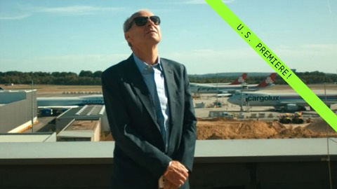

About the film
On the night of February 21, 2018, investigative journalist Ján Kuciak and his fiancée Martina Kušnírová, both just 27 years old, were brutally murdered in their home. It was the first targeted killing of a journalist in Slovakia’s history, and shocked citizens protested on a scale not seen since the fall of communism. Kuciak was well known for covering questionable financial connections between politicians and “elite” business tycoons, namely millionaire Marián Kocner. When police failed to meaningfully investigate the prime suspect, journalists mobilized the public. Leaked files, Kuciak’s posthumous reports and civic outcry led to scandalous discoveries of decades-old corruption networks involving Kocner and the police chief, high-ranking bureaucrats and the prime minister himself.
At the festival
- 2022 Sunday, October 16, 2022 · 4:30 PM · Naval Heritage CenterScreening followed by Q&A with director Matt Sarnecki, moderated by Ron Nixon of the Associated Press
Sessions about this film
- 2022 · Fri Oct 14 · 2:00 PMPanel · DX²Vanishing Act: Capturing the Death of DemocracyVasily Polonsky, Ricardo Sandoval-Palos, Corinne van Egeraat, Drew Sullivan
More films on these topics
 The Black SwanMads Brügger2025 · 90 min
The Black SwanMads Brügger2025 · 90 min The Panama PapersAlex Winter2018 · 100 min
The Panama PapersAlex Winter2018 · 100 min The Sludge WarGalassia Grassetto2026 · 80 min
The Sludge WarGalassia Grassetto2026 · 80 min
The Oligarch and the Art DealerAndreas Dalsgaard2026 · 120 min Cover-UpLaura Poitras, Mark Obenhaus2025 · 117 min
Cover-UpLaura Poitras, Mark Obenhaus2025 · 117 min- The Lost Souls of SyriaStéphane Malterre2023 · 99 min